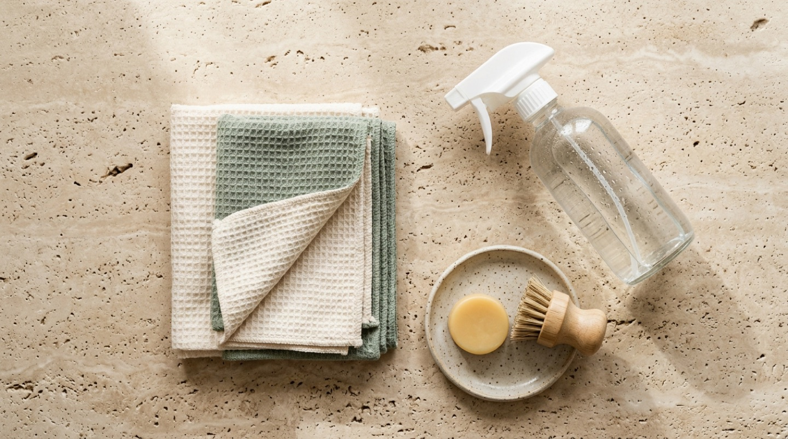

Editorial & Affiliate Disclosure: All PureWear Space calculators and surface care guides rely on published chemical safety rules, stone care standards, and transparent arithmetic formulas. Some individual supply guides include clearly marked sponsored links where we may earn a commission at no additional cost to you.
Start Here: Illustrated Everyday Home & Surface Guides

Everyday Household Stain & Surface Cleaning Cheat Sheet (2026)
Match coffee, red wine, cooking grease, and hard-water minerals to the exact pH-safe cleaner for marble, quartz, sealed hardwood, and cotton.
Spray Bottle & Mop Bucket Oz-Per-Gallon Dilution Chart
Stop guessing capfuls. Convert 1:10, 1:32, 1:64, and 1:128 concentrate labels into exact teaspoons and milliliters for 16 oz and 32 oz bottles.
Household Chemical Mixing Safety Checker
Instantly check whether bleach, vinegar, hydrogen peroxide, baking soda, rubbing alcohol, or ammonia sprays can be used side by side safely.
Flagship Business & Operations Calculators
For Cleaning ProsHouse Cleaning Quote Calculator
Estimate residential and commercial jobs by square footage, bed/bath count, and service frequency with transparent labor-hour math.
Payroll % of Revenue & Profit Margin Calculator
Model loaded technician payroll (base wages + FICA 7.65% + FUTA/SUTA + Workers' Comp) against gross revenue to protect net operating profit.
Move-Out & Deep Cleaning Add-On Calculator
Build itemized move-in/move-out estimates covering inside oven, refrigerator, empty cabinets, baseboards, blinds, and heavy soil multipliers.
Quotes, Pricing & Profit Margins
Workforce, Shifts & Operations Management
Everyday Surface Chemistry, Dilution & OSHA Safety
The 4-Rule Surface & Cleaning Chemistry Framework Behind PureWear Space
Viral social media cleaning hacks frequently ruin expensive household finishes—suggesting undiluted white vinegar on honed marble islands, boiling water on fresh protein spills, or dangerous toilet-cleaner cocktails inside closed bathrooms. Every everyday guide and professional calculator on PureWear Space follows four documented chemical and operational principles:
1. Match Cleaner pH to Substrate
Calcareous natural stones (marble, travertine, limestone) contain calcium carbonate that etches on contact with pH < 7 acids like vinegar or lemon. Keep daily stone care strictly near neutral pH 7, reserving mild citric or acetic acids for porcelain, glass, and chrome descaling.
2. Temperature & Enzyme Timing
Per American Cleaning Institute stain chemistry, cool water prevents blood, milk, egg, and coffee tannins from heat-setting into fibers, while protease and amylase enzyme pre-treatments need 10 to 15 minutes of warm dwell time to cleave organic bonds.
3. Exact C1V1 = C2V2 Dilution
Pouring extra concentrate into a mop bucket does not clean faster—it leaves sticky surfactant film on hardwood and LVP floors that attracts new shoe soil within hours. Measuring exact fluid ounces per 32 oz bottle protects finishes and cuts supply waste.
4. Loaded Labor & OSHA Safety
For independent cleaners and maid company owners, sustainable pricing requires modeling statutory employer taxes (7.65% FICA, FUTA/SUTA, Workers' Comp), non-billable windshield drive time, and OSHA 29 CFR 1910.1200 secondary container labeling.
Quick-Reference Guide: Choosing the Right PureWear Tool for Your Task
Not sure whether you need a household chemistry reference, a spray-bottle ratio converter, or a residential job-bidding calculator? Use the crawlable directory below to jump straight to the exact formula you need without digging through menus:
| Scenario or Question | Recommended PureWear Tool | Core Formula / Standard Used |
|---|---|---|
| Removing coffee, red wine, cooking oil, or hard-water spots safely | Everyday Household Stain & Surface Cheat Sheet | ACI stain families + Natural Stone Institute pH 7 calcareous stone rules |
| Mixing 1:10, 1:32, 1:64, or 1:128 concentrates into 16 oz / 32 oz spray bottles | Disinfectant Oz-Per-Gallon & Spray Bottle Calculator | Exact volume-parts stoichiometry (fl oz, mL, teaspoons, active PPM) |
| Preparing sanitizing bleach or hypochlorous acid (HOCl) PPM solutions | HOCl & Sodium Hypochlorite PPM Dilution Calculator | C1V1 = C2V2 active chlorine concentration conversion |
| Checking if two household cleaners release hazardous fumes together | Chemical Safety & Incompatibility Checker | OSHA 29 CFR 1910.1200 & CDC chlorine/chloramine reaction matrix |
| Labeling secondary workplace spray bottles for OSHA inspections | OSHA HazCom Secondary Container Label Generator | 29 CFR 1910.1200(f)(6) GHS pictogram & hazard statement print layout |
| Estimating recurring bi-weekly or monthly house cleaning prices | House Cleaning Estimate Calculator | Square footage + bed/bath fixture count + frequency discount tiers |
| Pricing move-out deep cleans (inside oven, fridge, cabinets, blinds) | Move-Out & Deep Cleaning Add-On Calculator | Itemized appliance/detail labor minutes + heavy soil multipliers |
| Auditing cleaning business payroll % of revenue and net operating margin | Payroll % of Revenue & Profit Margin Calculator | Base wages + 7.65% FICA + FUTA/SUTA + Workers' Comp + drive time |
| Bidding commercial offices and medical suites per square foot | Commercial Janitorial Bidding Calculator | ISSA 612 sq-ft/hour production rates + gross margin divisor math |
| Splitting residential client tips fairly across lead techs and trainees | Maid Service Crew Tip Pooling Calculator | FLSA 29 CFR 531.54 manager-exclusion rules + role-weighted hours |
Every calculator above processes inputs strictly inside your local browser session—meaning homeowner floor plans, chemical bottle notes, technician hourly wages, and commercial bid margins are never transmitted to external databases. Bookmark individual tools for one-tap access from kitchen tablets or field crew phones.
Frequently Asked Questions
Are PureWear calculators and household stain guides free for everyday homeowners as well as cleaning pros?
Yes. Every guide and calculator on PureWear Space runs 100% free in your browser with no account registration or email gate. Everyday homeowners use our stain picker, spray-bottle dilution chart, and chemical compatibility checker alongside residential maid services and commercial janitorial teams.
Why should you never clean marble, travertine, or limestone countertops with vinegar or lemon juice?
Per the Natural Stone Institute, marble, travertine, and limestone are calcareous stones composed primarily of calcium carbonate (CaCO3). Household acids like vinegar, lemon juice, red wine, and acidic bathroom sprays react immediately with calcium carbonate, creating permanent dull chemical burns called etch marks rather than removable stains. Always use a pH-neutral cleaner around pH 7.
Which two household cleaning chemicals must never be mixed together?
Never combine sodium hypochlorite chlorine bleach with acids such as white vinegar, toilet-bowl descalers, or lemon juice (which releases toxic chlorine gas), and never combine bleach with ammonia, glass cleaners containing ammonia, or quaternary ammonium disinfectants (which produces hazardous chloramine vapors).
How are PureWear dilution and cleaning business formulas built?
Dilution tools use exact C1V1 = C2V2 volume-parts stoichiometry, chemical safety warnings follow OSHA 29 CFR 1910.1200 Hazard Communication and American Cleaning Institute guidelines, and commercial labor and margin calculators model ISSA 612 square-footage production rates alongside federal FICA/FUTA payroll burden rules.
When should I use waffle-weave microfiber instead of plush terry-weave microfiber?
Waffle-weave microfiber uses flat recessed pockets with zero loose loops, making it ideal for buffing glass mirrors, polished chrome faucets, and honed marble countertops dry without leaving lint streaks. Plush split-loop terry microfiber traps heavier grease, dust, and damp bathroom soil, making it better suited for general dusting, baseboards, and stovetop wiping—just wash microfiber without liquid fabric softener so oil-trapping split fibers stay unclogged.
Bleach-Resistant Workwear & Water-Repellent Cleaning Aprons
Breathable four-way stretch uniforms and multi-pocket aprons built for deep-cleaning days, household organization projects, and professional residential crews.